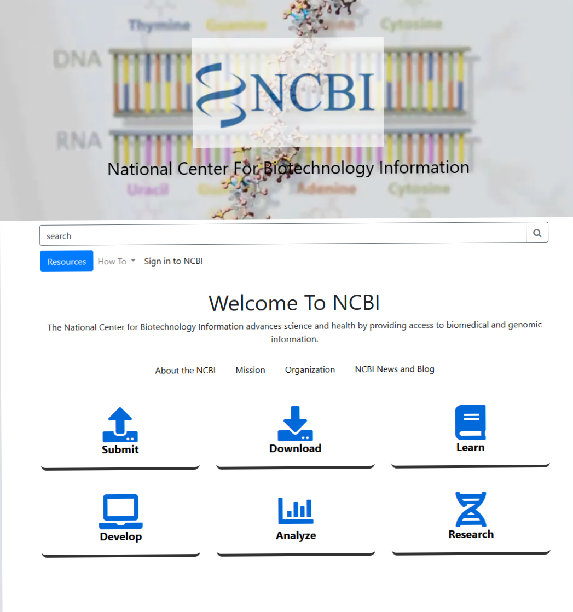
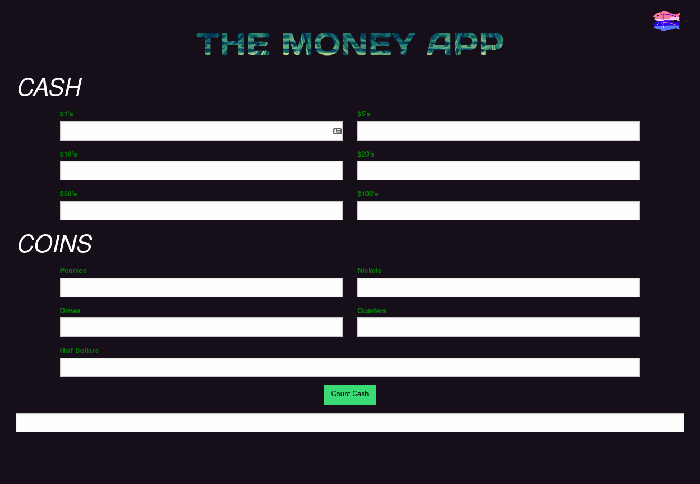
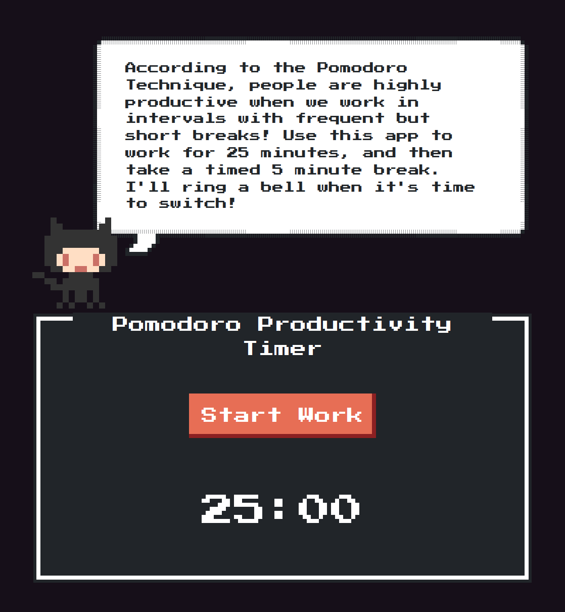
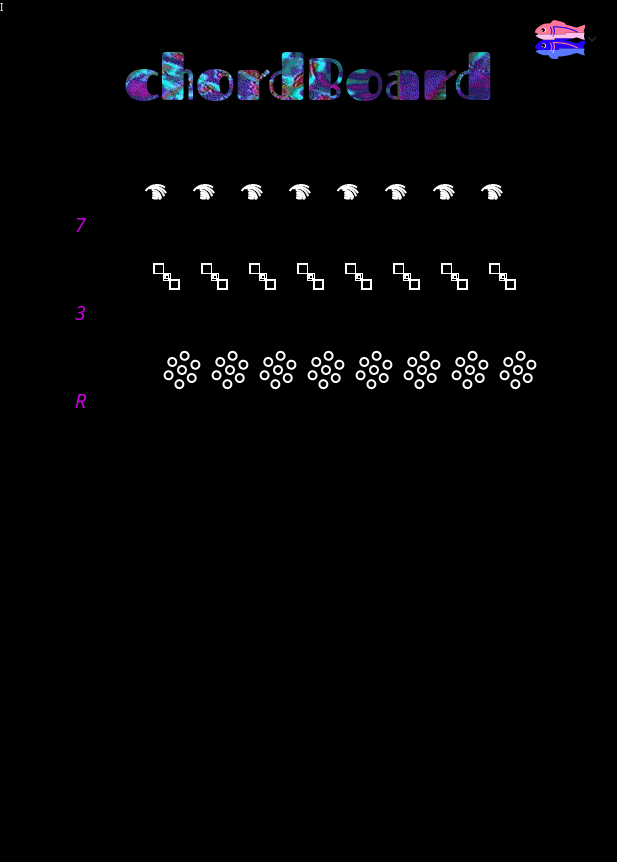
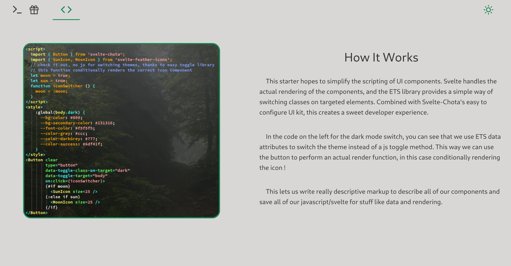

Jacob Ybarra
✨ Freelance Web Developer ✨
⚡ NCBI Home-Page Re-Design

This page was an excercise in taking a very important website, and making it even better with an interesting and responsive UI.
Although this page was one of my first when I learned the web, I'm proud that it still looks great and improves the usability of the original across mobile devices!
🔶 Code 🔶 Site
⚡ Retail Cash Counter

This app was designed to help me personally in my retail job. Everyday, I would need to count a drawer full of cash. For most this might be simple, but I live with dyscalculia, which can make dealing with lots of numbers a little difficult.
I built this page leveraging my knowledge of Javascript at the time, and though I would have done a few things differently these days, I'm proud of having built this with no framework tooling which would have obscured the simplicity of the code, even if it would have saved me a little programming.
🔶 Code 🔶 Site
⚡ Pomodoro Productivity Timer

When I started learning code, I quickly realized I could potentially burn myself out on a day's work if I didn't pace myself. Hence, I wrote this web app to keep myself productive.
Upon building this, I learned alot about Javascript's datetime API, and leveraged P5js (nowadays one of my favorite Javascript libraries) to convert time to human readable formats. This was one of the first things I built in any programming language, introducing me to the need for well written and documented code.
🔶 Code 🔶 Site
⚡ Chordboard Web Synth
For this project, I chose to build a web synth designed to make small chords, suitable for chip tune music. The result is Chordboard, where the aim became ease of use for anyone no matter their musical background. 
When on the webpage, try pressing down 'q', 'a', 'z' at the same time. This is a Cm7 triad! Move this shape around and we can spell new 7th triads, and even 9ths, and 11ths.
To be sure, this may be a bit easier to grasp if your familiar with music theory, but the basic principle is that many of the qwerty keys on your keyboard will sound a short tone, and any combination of them will form a 'chordiod' or a small harmony in the Eb scale (or C minor). A more theory based description is available in the repo's README section.
🔶 Code 🔶 Site
⚡ Svelte x Easy Toggle State App Starter

This is an app starter distro, used for getting a UI up and started for a web application without much hassle.
For the web heads out there, the idea here is to get some UI basics sqaured away 'out of the box'.
These include single file responsive components, the Svelte compiler framework for rendering updates, and Easy Toggle State, a tiny library for making DOM changes without writing any javascript at all.
The result is a developer experience I'm pretty proud of, as it gives a nice base to write a great app UI while minimizing headaches and learning curve that might come with using modern web frameworks.